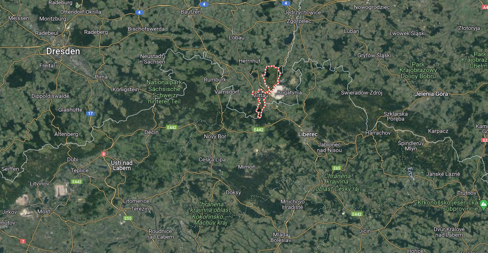
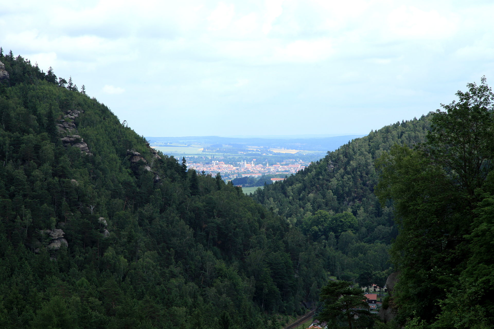
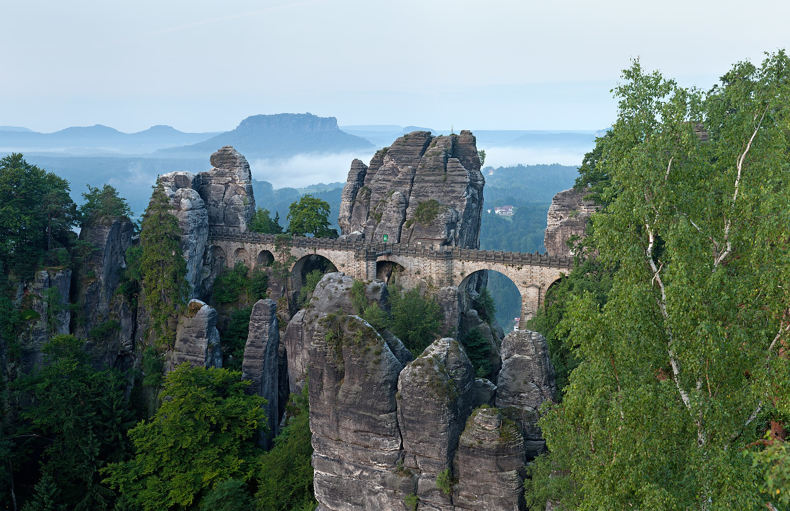
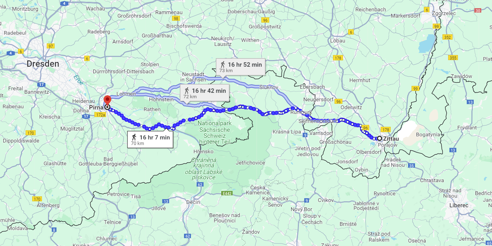
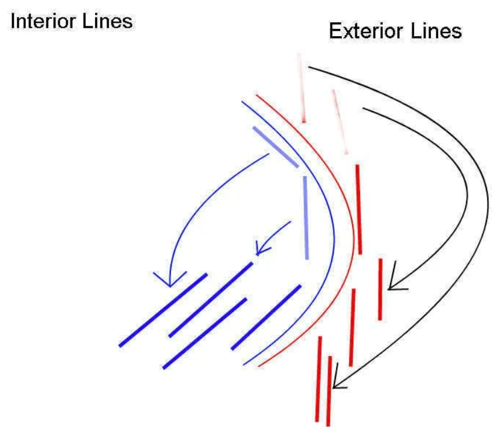

드레스덴을 향하여 (5) - 드레스덴의 삼중 방어
게시: 2024-01-08T06:30:49+09:00
이 무렵 나폴레옹은 오스트리아가 이미 연합군 측에 붙었다는 것을 집요하게 인정하지 않으려 했습니다. 이는 자신에게 유리한 것만 보고 들으려는 사람에게 나타나는 현상인데, 매우 좋지 않은 일이었습니다. 그만큼 오스트리아의 참전이 나폴레옹에게는 심각한 타격이 된다는 뜻이기 때문이었습니다. 8월 16일에는 보헤미아에 심어둔 스파이로부터 러시아군이 보헤미아로 이미 들어왔다는 소식이 날아왔지만, 나폴레옹은 이런 소식조차 좀처럼 믿지 않았습니다. 그래서 교전이 허용되는 날짜인 8월 17일이 되자, 나폴레옹은 즉각 럼부르크(Rumburg, 체코어로 Rumburk)에 근위대 1개 기병사단과 1개 보병사단을, 그리고 폴란드 병사들로 구성된 제8군단과 제4기병군단을 지타우(Zittau)로 투입하여 남쪽의 보헤미아 국경 안으로 침입하여 정찰 활동을 시작했습니다. 정말 오스트리아군이 작센 일대를 향해 군사 작전을 시작할 것인지 확인하고자 하는 것이었습니다. 하지만 진실이 밝혀지는데는 그들의 정찰 보고서를 기다릴 필요도 없었습니다. 같은 날 바우첸의 나폴레옹 사령부로 4만의 러시아군이 8월 13일 이미 글라츠(Glatz)를 통과하여 보헤미아로 진입했다는 정식 보고서가 도착했던 것입니다. 그럼에도 불구하고, 나폴레옹은 크게 낙담하지는 않았고, 그의 머릿속에는 오히려 이 기회를 이용해야겠다는 역발상 아이디어가 샘물처럼 솟아났습니다. 그는 보헤미아에 진입한 러시아군이 먼저 프라하로 먼저 갈 것이고, 그러자면 8월 25일 정도까지도 거기에 도착하지 못할 것이니 자신에게는 1~2주의 시간이 있다고 판단했습니다. 이 시간을 이용하여 그는 연합군의 주력이 보헤미아에 집결하느라 비교적 약한 병력만 남겨둔 슐레지엔을 빈집털이 하기로 했습니다. 나폴레옹은 이미 뢰벤베르크-분츨라우 일대에 주둔하고 있던 네의 제3군단, 로리스통의 제5군단, 마르몽의 제6군단, 막도날의 제11군단, 라투르-모부르의 제1기병군단, 세바스티아니의 제2기병군단, 그리고 방담의 제1군단까지 합한 약 13~14만의 병력에, 근위대의 5개 사단 병력 4~5만을 합해 18만 병력을 동원하여 슐레지엔을 침공할 생각이었습니다. 실제로 이 병력이 들이친다면, 2선급 수비부대를 합해도 10만 정도에 불과했던 블뤼허의 슐레지엔 방면군은 낭패에 놓일 수 밖에 없었습니다. 하지만 이런 기회가 생긴 근본 이유에 대해 생각해봐야 합니다. 연합군이 그렇게 슐레지엔에서 보헤미아로 옮겨간 이유는 바로 그랑다르메의 핵심 기지인 드레스덴을 들이치기 위해서였습니다. 나폴레옹이 계획대로 주력부대를 슐레지엔에 투입한다면 역으로 텅 빈 드레스덴이 위험해지게 된는데, 강력한 보헤미아 방면군이 그렇쟎아도 드레스덴을 노리는 상황에서 이건 너무 위험한 도박이 아니었을까요? 나폴레옹 생각에는 전혀 그렇지 않았습니다. 나폴레옹은 생시르(St.-Cyr)에게 편지를 보내 보헤미아의 연합군은 지타우를 통해 드레스덴 일대로 북진하지는 못할 것이지만, 혹시 그렇게 한다고 하더라도 아무 걱정이 없다고 자신했습니다. 이런 자신감의 근거는 크게 2가지, 시간과 공간이었습니다. 첫 번째는 위에서 언급한 대로 보헤미아 방면군이 출정 준비를 갖추려면 적어도 1~2주가 더 걸릴 것이라고 예상했기 때문이었고, 두 번째는 작센과 보헤미아 사이에 동서로 길게 병풍처럼 늘어서서 작센과 보헤미아 사이의 자연 장벽 역할을 하는 수데덴(Sudeten) 산맥 때문이었습니다.

(수데텐 산맥은 동서로 길게 뻗은 일련의 산맥들을 통틀어 이르는 이름입니다. 지타우가 위치한 평원은 수테텐 산맥을 남북으로 관통하는 몇 안되는 계곡 중 하나입니다.)

(지타우는 수데덴(Sudeten) 산맥 중에서도 엘베 사암 산맥(Elbsandsteingebirge, 엘프잔트슈타인비어거)과 거인 산맥(Riesengebirge, 리징거비어거) 사이에 위치한 평원에 위치한 도시입니다. 지타우가 위치한 이 평원은 작센과 보헤미아 사이의 주요 교통로이기도 합니다. 이 사진은 오이빈(Oybin) 산에서 내려다 본 지타우시 전경입니다.)
(엘베 사암 산맥(Elbsandsteingebirge)에는 '작센 스위스'(Sächsische Schweiz)라는 이름의 멋진 국립공원이 있습니다. 사진 속 커다란 바위 언덕은 백합바위(Lilienstein, 릴리엔슈타인)이라는 이름을 가진 명소입니다.)

(역시 작센 스위스 국립공원에 있는 바스테이 다리(Basteibrücke, 바스테이브뤼커)입니다. 그 일대 산세의 험준함을 잘 보여줍니다.) 나폴레옹의 작전은 젊은 시절부터 언제나 아슬아슬한 시간과의 싸움을 동반했습니다. 아르콜레 다리 전투라든가 아우스테를리츠 전투 등에서 그는 수적으로 불리한 상황에서 시작한 전투를 기동성으로 극복하며 승리로 마무리지었습니다. 이번에도 보헤미아 방면군이 드레스덴을 노리고 침공하기 전에 슐레지엔에서 대승을 거둔다면, 보헤미아 방면군은 슐레지엔의 구원을 위해 허겁지겁 달려올 것이고, 그러면 분산된 슐레지엔 방면군과 보헤미아 방면군을 앉은 자리에서 차례로 격파할 수 있다는 계산이었습니다. 하지만 전쟁은 절대 자신의 계산대로만 흘러가지 않는다는 것을 잘 알고 있던 그는 안전 장치도 준비했습니다. 먼저, 약 2만6천에 달하는 생시르(Saint Cyr)의 제14군단을 드레스덴 남동쪽에 위치한 피르나(Pirna)에 배치하여, 엘베강 좌안과 우안을 지키도록 했습니다. 이 도시는 보헤미아에서 드레스덴으로 오려면 반드시 거쳐야 하는 관문 같은 곳으로서, 연합군이 드레스덴을 들이치려면 여기서 엘베강을 도강하리라고 예상되는 지점이었습니다.
이것만으로는 불안하다고 생각하여, 수데텐 산맥에서 거의 유일하게 대군이 통과할 수 있는 계곡인 지타우(Zittau)에 빅토르의 제2군단과 포니아토프스키의 제8군단, 그리고 거기에 딸린 제4 기병군단 등 4만의 병력을 배치하고 그 일대의 유리한 고지를 점령하도록 했습니다. 이렇게 이중으로 드레스덴을 지킬 장치를 마련했으니, 설령 자신의 계산과는 달리 보헤미아 방면군이 훨씬 일찍 드레스덴을 향해 공세를 개시하더라도 충분히 막을 수 있다고 나폴레옹은 생각했습니다. 거기에 더해, 나폴레옹은 생시르에게 보낸 편지에서 만약 연합군이 지타우를 통해 습격을 시작한다면 3만의 병력을 보유한 방담의 제1군단이 36시간 안에 지타우에 도착할 것이고, 곧 이어 나폴레옹 본인이 5만의 근위대를 추가 병력으로 거느리고 도우러 달려가겠다고 약속했습니다.

(피르나는 엘베강 상류에 위치한 도시입니다. 이 피르나 풍경화는 18세기 중반 이탈리아 출신 화가인 Bernardo Bellotto의 작품입니다.)

(지타우에서 피르나까지는 약 70km, 2~3일이면 충분히 행군할 수 있는 거리입니다.) 하지만 인간은 자신의 생각보다 작은 존재이고, 수데텐 산맥은 광범위한 지역이었습니다. 만에 하나라도, 연합군이 지타우나 피르나를 거치지 않고 그냥 처음부터 엘베강 서쪽인 럼부르크(Rumburg)로부터 북진하여 드레스덴으로 직행하는 경우도 고려해야 했습니다. 나폴레옹처럼 용의주도한 사람이 그런 가능성을 무시할 리가 없었습니다. 그는 그 경우에 대해서도 계산을 해놓았는데, 그럴 경우 지타우에 배치해두었던 제2군단과 제8군단 등 4만 병력이 행군하기 딱 좋은 엘베 강변을 따라 신속하게 드레스덴으로 달려갈 수 있는데다 방담의 제1군단과 자신의 근위대도 지타우 대신 드레스덴으로 달려가면 된다고 판단했습니다.

(연합군이 어떻게 나오든 이렇게 자신이 훨씬 더 빨리 현장에 도착할 수 있다고 나폴레옹이 자신했던 것은 바로 이 하계 작전을 시작하면서 자신의 위치가 가지고 있던 본질적인 이점, 바로 내선(interior lines) 이동의 장점 덕분이었습니다. 연합군에 비해 나폴레옹은 더 적은 거리를 이동하면 되었으니까요.) 드레스덴에 이렇게 삼중 방어망을 펼쳐 놓은 것은 드레스덴이 그랑다르메에게 있어 그렇게 중요한 기지였기 때문이었습니다. 만약 연합군이 나폴레옹과 파리 사이의 교통로를 노린답시고 북쪽의 드레스덴이 아니라 서쪽의 바이에른을 침공한다면 나폴레옹으로서는 최상의 시나리오가 될 것이었습니다. 그의 군수기지는 드레스덴이었으므로 그는 바이에른의 상황은 무시하고 슐레지엔 전체를 정복하여 러시아군과 그 본토와의 교통로를 끊은 뒤, 상황에 따라 베를린쪽을 치던가 아니면 반대로 보헤미아를 공격할 생각이었습니다. 여기는 러시아가 아니라 중부 유럽이라서 홈그라운드를 점하고 있는 것은 바로 자신이며, 만약 자신이 보헤미아를 공격하면 퇴로가 끊길 것을 걱정하는 러시아군과 본토가 공격받는 것을 견딜 수 없는 오스트리아군은 바이에른을 침공했던 속도보다 더 빨리 보헤미아로 되돌아올 것이라고 예상했던 것입니다. 그러나, 아군이 준비하는 동안 적군도 낮잠만 자고 있던 것은 아니었고, 원숭이도 나무에서 떨어질 때가 있는 법이었습니다. Source : The Life of Napoleon Bonaparte, by William Milligan Sloane Napoleon and the Struggle for Germany, by Leggiere, Michael V https://en.wikipedia.org/wiki/Zittau https://en.wikipedia.org/wiki/Elbe_Sandstone_Mountains https://en.wikipedia.org/wiki/Saxon_Switzerland https://en.wikipedia.org/wiki/Giant_Mountains https://en.wikipedia.org/wiki/Pirna https://alchetron.com/Interior-lines